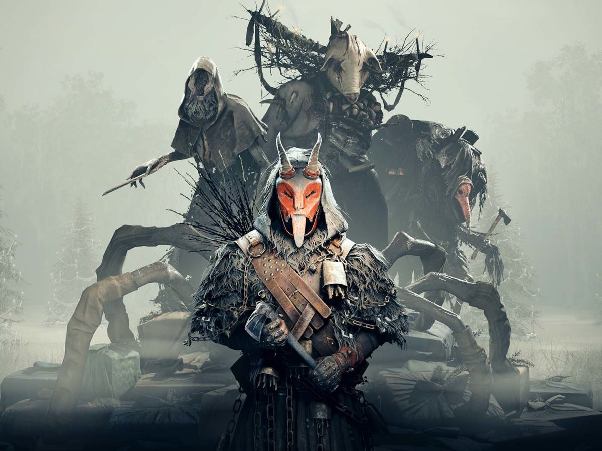
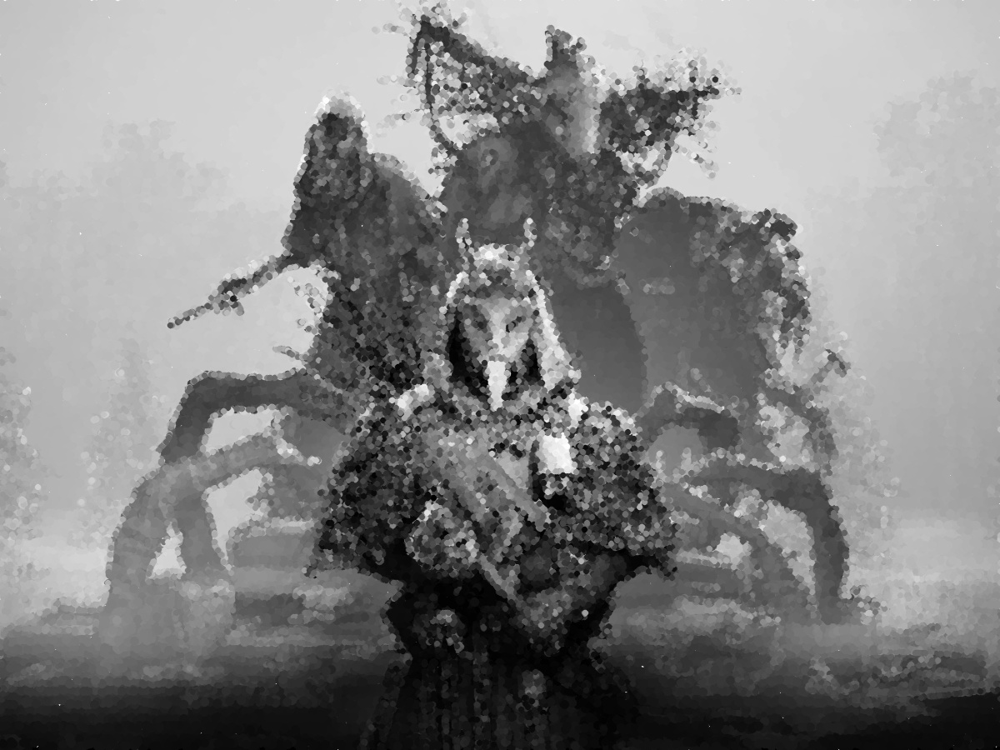

on
[EX-07] Pontilhismo
Exercício 7
Objetivo
-
Utilizando os programas
exemplos/canny.cppeexemplos/pontilhismo.cppcomo referência, implemente um programacannypoints.cpp. A idéia é usar as bordas produzidas pelo algoritmo de Canny para melhorar a qualidade da imagem pontilhista gerada. A forma como a informação de borda será usada é livre. Entretanto, são apresentadas algumas sugestões de técnicas que poderiam ser utilizadas:-
Desenhar pontos grandes na imagem pontilhista básica;
-
Usar a posição dos pixels de borda encontrados pelo algoritmo de Canny para desenhar pontos nos respectivos locais na imagem gerada.
-
Experimente ir aumentando os limiares do algoritmo de Canny e, para cada novo par de limiares, desenhar círculos cada vez menores nas posições encontradas. A Figura 19 foi desenvolvida usando essa técnica.
-
-
Escolha uma imagem de seu gosto e aplique a técnica que você desenvolveu.
-
Descreva no seu relatório detalhes do procedimento usado para criar sua técnica pontilhista.
Implementação
Com base nos dois programas fornecidos, foi elaborado o seguinte algoritmo para alcançar um resultado similar ao da Figura 19:
- Aplicar Canny com um threshold pré-definido
- Realizar a pintura dos pontos maiores que compõem a imagem
- Realizar consecutivas pinturas (10, no exemplo mostrado) de pontos menores nas bordas encontradas por Canny
- Testar se o threshold é adequado, caso não seja, mudar seu valor e repetir o processo novamente
Por fim, o valor 30 pareceu o mais adequado para a imagem utilizada.
cannypoints.cpp
[...]
int cannyThreshold = 30;
Canny(image, border, cannyThreshold, 3 * cannyThreshold);
xrange.resize(height / STEP);
yrange.resize(width / STEP);
iota(xrange.begin(), xrange.end(), 0);
iota(yrange.begin(), yrange.end(), 0);
for (uint i = 0; i < xrange.size(); i++) {
xrange[i] = xrange[i] * STEP + STEP / 2;
}
for (uint i = 0; i < yrange.size(); i++) {
yrange[i] = yrange[i] * STEP + STEP / 2;
}
points = Mat(height, width, CV_8U, Scalar(255));
random_shuffle(xrange.begin(), xrange.end());
for (auto i : xrange) {
random_shuffle(yrange.begin(), yrange.end());
for (auto j : yrange) {
x = i + rand() % (2 * JITTER) - JITTER + 1;
y = j + rand() % (2 * JITTER) - JITTER + 1;
gray = image.at<uchar>(x, y);
circle(points, cv::Point(y, x), RAIO, CV_RGB(gray, gray, gray), -1,
cv::LINE_AA);
}
}
for (int i = 0; i < 10; i++) {
for (auto i : xrange) {
random_shuffle(yrange.begin(), yrange.end());
for (auto j : yrange) {
x = i + rand() % (2 * JITTER) - JITTER + 1;
y = j + rand() % (2 * JITTER) - JITTER + 1;
gray = image.at<uchar>(x, y);
if (border.at<uchar>(x, y) == 255) {
circle(points, cv::Point(y, x), RAIO - 2,
CV_RGB(gray, gray, gray), -1, cv::LINE_AA);
}
}
}
}
imshow("points", points);
[...]Resultados
 Imagem original
Após executado o programa, obtemos a seguinte imagem:
 Imagem pontilhista